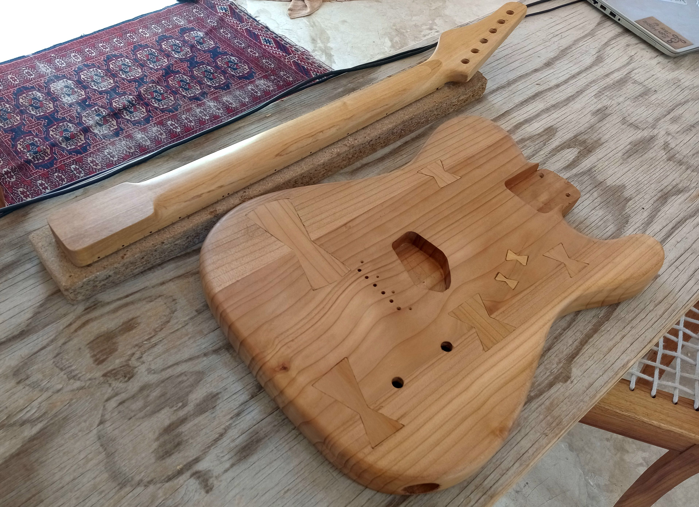
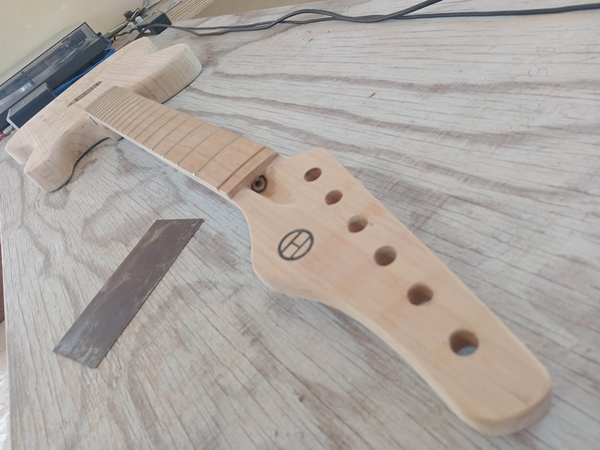
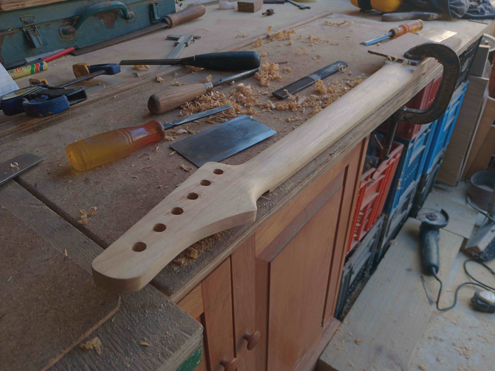
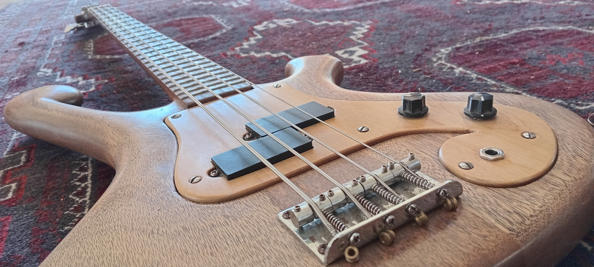

The Workshop






Sustainable. Minimalist. Handmade in Cape St Francis.
Specializing in minimalist designs with natural oil and shellac finishes. We believe in the tonal integrity of locally sourced, sustainable timbers like Blackwood, Wild Olive, and reclaimed Oregon Pine.
Reclaimed Oregon Pine body with Pau Marfim necks. Finished in satin top oil.
Laminated Blackwood sides joined at the nodes for maximum resonance.



